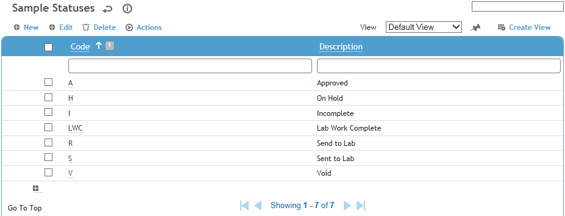
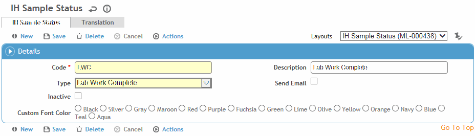

This table contains codes used to track a sample’s status on the way to being approved. These statuses can be color-coded to better identify them in the sample lists.
To filter the list of records, enter a few characters in one or more of the fields at the top followed by an asterisk, then press Enter.

Click a link to edit a sample status, or click New to add a new status.

Enter a Code and Description for the status.
Select the status Type:
|
Type |
Description |
|---|---|
|
Incomplete |
Default value when a sample is created or when a sample has been rejected by the lab, and needs to be corrected and added to a new lab requisition. |
|
Send to Lab |
Automatically set when the IH/Technician creates a lab requisition for that sample. All data fields sent in the lab requisition are locked from editing (Monitoring and Agent tabs). |
|
Sent to Lab |
Automatically set when the lab downloads the lab requisition in Excel format, or a batch interface has sent the samples to the lab. All data fields sent in the lab requisition are locked from editing (Monitoring and Agent tabs). |
|
Lab Work Complete |
Automatically set when all results are imported from the lab. |
|
On Hold |
Manually set (by the IH only) |
|
Void |
Manually set (by the IH only) |
|
Approved |
Manually set (by the IH only) |
Indicate if you want the IH to receive an Email notification when the sample is changed to this status.
Select the Color in which samples with this status should appear in the sample list.
Click Save.